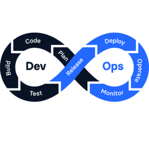

Introducing the new IHostedLifecycleService Interface in .NET 8
Revolutionizing Application Lifecycle: Unveiling the IHostedLifecycleService Interface in .NET 8.
Read more →

Concurrent Hosted Service Start and Stop in .NET 8
Seamless Concurrent Operations: Exploring Hosted Service Start and Stop in .NET 8.
Read more →

Accessing State in System.Text.Json Custom Converters
Demystifying System.Text.Json: Unraveling State Access in Custom Converters.
Read more →